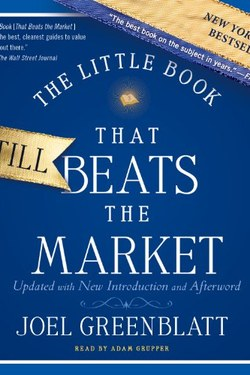

Library › Money & Finance
The Little Book That Beats the Market — Summary & Key Lessons

The magic formula: buy good companies cheap, hold a year, repeat — a two-factor system anyone can run.
📖 OPEN THE FULL INTERACTIVE BREAKDOWN →🌐 Read it in Hindi, Hinglish, Gujarati, Tamil & 22 more languages — free, with audio.
💡 The Big Idea
Greenblatt's famous simplicity: rank the whole market on two factors — business quality (return on capital) and cheapness (earnings yield) — buy the top 30 combined, hold one year, then repeat with the new list. The formula is not magic; it is mean reversion plus quality preference. His deeper point: the market misprices quality companies over short horizons, and patient yearly rotation harvests the mispricing.
🧠 The 9 Key Lessons
Lesson 1: Good Business + Cheap Price
Chapter 1: The Formula
Greenblatt's entire system is two facts: return on capital is high for good businesses, and earnings yield is high for cheap ones. Each alone fails — quality stocks can be overpriced, cheap stocks can be junk. Their combination (rank both, buy the sum) does the heavy lifting. The formula is boring on purpose: any simplicity beats clever complexity in markets.
📖 Example: A wonderful company at 60x earnings is a bad investment; a mediocre one at 3x can be worse; the intersection is where the returns are. Read the full example →
⚡ Do this: For your next investment, write both numbers first: return on capital and earnings yield.
Lesson 2: Mean Reversion: The Market's Mood Swings
Chapter 2: The Engine
Why the formula works: prices fluctuate far more than business values. Great businesses get hated for a year (bad headline, missed quarter) and their prices revert upward; this is the reversion the formula harvests. Greenblatt's evidence: a year of patience captured most of the benefit; shorter horizons were noise, longer ones were unnecessary.
📖 Example: A company's value rarely halves in a year, but its price often does — and the price usually comes back. Read the full example →
⚡ Do this: When a quality business drops sharply, ask: did the business change, or only the mood?
Lesson 3: Time Frame Is the Tax You Choose
Chapter 3: Patience
Greenblatt is blunt: the formula works on a 5-10 year horizon and can lose money in any single year or three. The investor who needs results this quarter cannot play. This is the deepest lesson of the book — the return on patience is enormous, and the fee for impatience is buying high and selling low.
📖 Example: An index fund held 20 years beats a brilliant trader version of the same fund traded weekly. Read the full example →
⚡ Do this: Write your investment horizon in weeks; if under 250, fix the horizon before anything else.
Lesson 4: Quality Is a Discipline, Not a Hunch
Chapter 4: The Filter
Return on capital is the accountant's translation of a moat: a business that earns 25% on invested capital year after year has something — brand, network, cost advantage — worth owning. Greenblatt's rule: prefer the good business at a fair price over the average business at a bargain, because quality compounds and junk doesn't.
📖 Example: Two retailers: one earns 20% on capital, the other 4%. The first can fund its own growth forever. Read the full example →
⚡ Do this: Before buying anything, calculate its return on capital: the moat test in one number.
Lesson 5: The Formula Is a Starting Point
Chapter 5: The Limits
Greenblatt is disarmingly honest about his own tool: it is a starting point, not a machine — it ignores company narratives, cyclical timing and individual risk, and it assumes patience most people lack. He recommends the formula for money you will not need for a decade, and doubts any formula can survive its own publicity permanently.
📖 Example: The formula's success made it popular — and popularity itself reduces future returns; the principle survives, the excess may not. Read the full example →
⚡ Do this: Use simple screens as a filter, then add the human questions: where is this business going, and do I understand it?
Lesson 6: Mr Market's Mood: The Yearly Ritual
Chapter 5: The Formula in Practice
Greenblatt's practical insight is the ritual: the formula forces you to sell the year's winners and buy the new list of cheap quality once a year — a mechanical rebalance that removes your emotions from the trade. The investor who loves his losers and sells his winners is guarding nothing but his own mood; the ritual protects him from himself.
📖 Example: The investor who 'couldn't sell' a falling stock and 'couldn't let go' of a winner kept both for the wrong reasons — the formula takes the decision away from the mood. Read the full example →
⚡ Do this: Set one fixed rebalance date per year (e.g. 1 January) and pre-commit in writing: on that date, sell and rebuy by the rules, not by the feelings.
Lesson 7: Magic Formula: The Two Scores
Chapter 5: The Magic Formula (Earnings Yield + Return on Capital)
Greenblatt's formula ranks every company on two numbers: earnings yield (how cheap) and return on capital (how good). Buy the top-ranked, hold a year, sell, repeat. The formula's genius is mechanical: it removes emotion and lets the numbers do the work. The book's honesty is the same as its genius: it is not magic, it is discipline — good businesses at bargain prices, bought repeatedly.
📖 Example: A company earning 12% on capital and priced at a third of its earnings value ranks high; the glamorous one earning 6% and priced at 40x ranks low — and the boring one wins. Read the full example →
⚡ Do this: Before any investment, write the two numbers yourself. If the business isn't good (high return on capital) and cheap (high earnings yield), the story doesn't matter.
Lesson 8: The Pain of Perfectly Good Stupidity
Chapter 6: The Market's Moods
Greenblatt's warning about the formula's hard part: it will be wrong for years. In the short run, the market rewards whatever it loves — and quality companies at cheap prices can stay cheap while junk soars. The formula fails emotionally long before it fails financially. The book's real lesson is about temperament: the strategy only works for people who can watch it look stupid.
📖 Example: In the late 1990s the formula shunned internet stocks and looked ancient — then the crash made it look like prophecy. Both were the same strategy. Read the full example →
⚡ Do this: Before buying anything, write your time horizon and your 'I will sell when...' rule. The rule is what survives the strategy's ugly years.
Lesson 9: Mr Market's Pockets: The Valuation Risk You Control
Chapter 9: The Risk
The book reframes risk: the market's risk is not volatility but paying too much for the future. When you buy an ordinary business at a wonderful price, most of your risk is already paid for; when you pay a wonderful price for an ordinary business, the risk is all yours. This is the one variable fully in the investor's control — the price you pay today decides the return you may collect tomorrow.
📖 Example: Two buyers, same company: one pays 8x earnings, one pays 40x. The first can be wrong about the company and still profit; the second must be right about everything. Read the full example →
⚡ Do this: For your next purchase, write the multiple you are paying and the earnings growth you need to justify it. Keep the piece of paper.
✅ 5-Step Action Plan
- Report return on capital and earnings yield before any buy.
- Separate business change from mood change in each drop.
- Write your true horizon; refuse shorter-framed decisions.
- Prefer 20% ROIC businesses over 5% bargains.
- Use the formula as a filter, then ask human questions.
⚠️ When This Doesn't Work
Backtests of simple formulas degrade and can be overfitted; tax, fees and behaviour reduce real returns. Greenblatt himself calls it a beginner's guide — not a guarantee, and not suitable for money you might need soon.
💀 The Graveyard Proves It
💉 Valeant Pharmaceuticals — The Price-Hike Machine From $90B to $5B. Burn: ~$85B of market value erased; one hedge fund lost $4B on the way down Read the full case study →
💬 Best Quotes from The Little Book That Beats the Market
- “When you combine a good business with a good price, the results can be spectacular.”
- “The magic formula is a 'dumb' strategy for nonsmart investors.”
- “The stock market is a lot like a casino, except that the house is often the dumbest guy in the room.”
Interactive version: mark lessons as read, listen in your language, share quote cards.